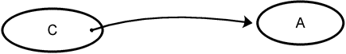
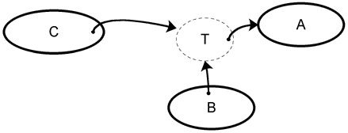
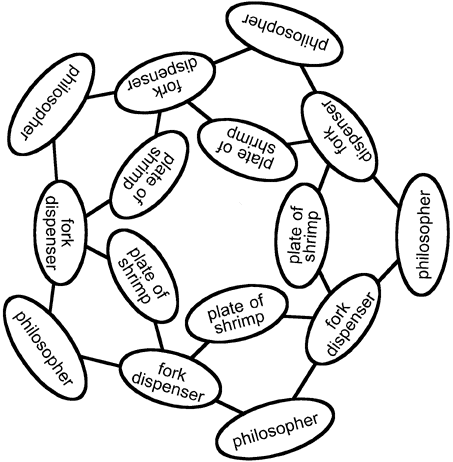
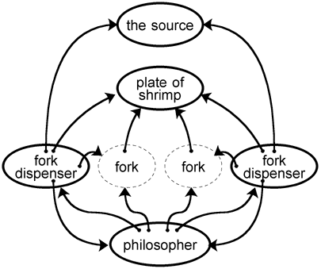
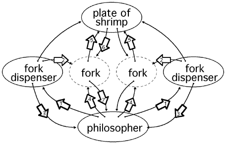

| |
Satan
Comes to |
||||||
©1997
Communities.com
All Rights Reserved
Note: This paper was written in a very old version of the E language, and not all the code will run in any of the currently supported versions. (Though most of the code should still work.) Nevertheless, it's a great example for illustrating the principles of E. If you work through these examples and convert them to work in a modern version of E, please send them to me, the webmaster-at-erights.org, and I will update this document. Thanks.
Abstract
A solution to Dijkstra's Dining Philosophers Problem which provides for deadlock avoidance and fairness. It does not require that the philosopher classes be trusted. Satan is invited to supply a class. An example of the failure of class-signing. The classes are written in E, a secure, distributed scripting language.
The Dining Philosophers Problem
The Dining Philosophers Problem is one of the standard exercises in the teaching of concurrent programming. It is instructive in the design of things like operating systems and distributed systems. It is an interesting problem because it introduces management of scarce, shared resources. It is tricky because most naive implementations will result in deadlock. The statement of the problem usually goes like this:
There is a group of philosophers (usually 5) who eat together at a round table. There are forks placed between the philosophers. Philosophers spend their time either thinking or eating. In order to eat, a philosopher must pick up exactly two forks, one on his immediate left, and the other on his immediate right. When he is done eating, he will put his forks down so that his neighbors may use them, and he thinks again.
The Dining Philosophers Problem (aka The Dining Quintuple Problem) was designed in 1965 by Edsger W. Dijkstra to demonstrate the horror that is deadlock. In some versions of the problem, the forks are replaced with chopsticks. This change does not substantively alter the problem, although it can simplify the graphics. Some versions have the philosophers eating spaghetti or rice. In this version, they are dining on shrimp.
The programming problem is to construct a simulation which will allow philosophers to move between their eating and thinking states while properly controlling the forks.
A typical solution has each philosopher doing something like this:
loop {
busy thinking
wait for left fork
wait for right fork
busy eating
drop left fork
drop right fork
}
The busy statements will consume time. The length of time is often random. The wait statements are often implemented using semaphores or other mutual exclusion gadgets, causing the program to block until the fork becomes available.
If every philosopher picks up his left fork and then waits for the right fork to become available, then the system will deadlock. Computation cannot go forward because the philosophers will never get their second forks. The fact that the busy periods are of random duration may reduce the occurrence of deadlock, but it does not prevent it. Occasional deadlock is actually a bigger problem, because it is much more difficult to replicate, diagnose, and fix. Deadlock is one of the greatest programming hazards in concurrent systems.
Some solutions modify some of the philosophers, so that they always pick up their right forks first. This does avoid deadlock, but it is a special solution. It cannot be generalized to avoid deadlock in other situations. Other implementations introduce waiters, rooms, chairs, tokens, and other objects to help manage the deadlock problem. These solutions are complex, and also not sufficiently generalizable.
Most solutions depend on the philosophers behaving correctly. For example, if a philosopher picks up his forks and never puts them down, the philosophers sitting beside him will die of starvation. If either happens to be holding a fork (which is likely), then all of the other philosophers will starve, too.
So we will redefine the problem. We still want to avoid deadlock, but we also want to be able to invite anyone to code their own philosopher class, and to have it run fairly with others.
An Example of the Failure of Class Signing
Suppose that you invite Satan to contribute one of the philosopher classes. How can you be confident that his code will not contaminate the shared environment, will not cause starvation among the other philosophers, and will not spoil everyone else's fun? Even more important, how can you be sure that Satan's code will not run amok and drain your bank account, reveal your private key, and trash your hard disk?
It is not sufficient to simply stuff Satan's code into a sandbox. He is not giving you an applet. He is giving you a class which needs to work cooperatively, even under the cloud of mutual suspicion, with other objects.
The goal is not to keep Satan out. You want to invite Satan in, but without compromising your security. You don't want to choose between safety and the benefits of openness. You want both.
Satan offers to prove to you that his class is safe by presenting an Authenticode certificate which will certify that Satan signed the class. You could verify that the signature is truly Satan's, but proof that it came from Satan is not proof that it is safe.
Satan, pretending to be offended by your skepticism, asks "Whose signature do you trust? Just say the name, and I will have them sign my class. Would you like Microsoft to sign it? There's a guy over there who owes me a favor."
You come to the conclusion that a signature cannot by itself transform a suspect class into a fully trusted class, so you decide that you need a more credible security mechanism.
Capabilities
That mechanism is capabilities. A capability is the unforgable, transferable, non-revocable right to communicate with an object. We will create a framework which will support anyone's Philosopher code, certified or not. By relying on good capability-based design, rather than certification, we have less overhead and a better system.

In fig. 1 we see an example of a capability relationship. The ovals represent objects. The arrow indicates an object reference. Object C has a reference to Object A, and therefore Object C has the capability to communicate with Object A. An object can receive a reference to an object by having the reference passed to it, or by instantiating a new object.
Assuming that Object C is not trusted, we cannot be certain that it will destroy its reference to Object A when requested to. Capabilities are not directly revokable. But they can be indirectly revocable, as can be seen in fig. 2:

Object C is given a reference to Object T. Normally, Object T will pass Object C's messages on to Object A. Object B can send a message to Object T which will cause Object T to destroy its own reference to Object A. Object C will be left with a reference to the now useless Object T. Object C's capability to communicate with Object A has been revoked. Object B doesn't need to trust Object C if it can trust Object T.
The Cast
The traditional cast in The Dining Philosophers includes the philosophers, the forks, and the plates of shrimp. We will now introduce a new object to the Dining Philosophers: The Fork Dispenser. It is not safe to share forks, so the Fork Dispenser will dispense new disposable forks. As fig. 3 shows, each philosopher must interact with two fork dispensers in order to interact with the plate of shrimp. Each fork dispenser is shared by two philosophers.

Each philosopher is assigned two fork dispensers. Philosophers do not have the capabilities necessary to interact directly with the other philosophers, the plates of shrimp, or with the system in general.
A philosopher sends requests to its fork dispensers, which respond by sending fork capabilities. The forks contain capabilities to the plate of shrimp, which the fork dispenser can revoke.

Fork Dispenser
To make a ForkDispenser, pass a reference to a trusted source to ForkDispenserMaker.
def ForkDispenserMaker(mySource) {
The ForkDispensers instance variables are defined here.
def nowServing := null
def firstPhilosopher := null
def secondPhilosopher := null
def firstPlate := null
def secondPlate := null
def theFork := null
def myTimer := TimerMaker()
def timerSerialNr := 0
def otherIsWaiting := false
serveOther is a subroutine which will be called by the forkPlease and forkReturn methods. Issue a fork to the other philosopher. Because a fork dispenser serves two philosophers, each with its own plate, figure out which plate to use.
def serveOther() {
def thePlate := null
if (nowServing == firstPhilosopher) {
nowServing := secondPhilosopher
thePlate := secondPlate
} else {
nowServing := firstPhilosopher
thePlate := firstPlate
}
theFork := ForkMaker(nowServing, thePlate)
nowServing <- hereIsYourFork(theFork)
otherIsWaiting := false
}
The def self below generates an object containing the methods service, forkPlease, and forkReturn, and returns a reference to that object.
def self {
The service message transmits a philosopher and plate pair. The philosopher must never get a direct capability to the plate. This information allows the fork dispenser to determine which plate to use. The service message should only come from the trusted source that created the fork dispenser. Checking this prevents Satan from trying to confuse the fork dispenser by sending his own service messages.
The fork dispenser sends its own reference to the philosopher. This gives the philosopher the capability to interact with the fork dispenser.
to service(theSource, thePhilosopher, thePlate) {
if (theSource == mySource) {
thePhilosopher <- hereIsYourForkDispenser(self)
if (firstPhilosopher == null) {
firstPhilosopher := thePhilosopher
firstPlate := thePlate
} else {
secondPhilosopher := thePhilosopher
secondPlate := thePlate
}
}
}
A philosopher requests a fork. Determine which plate he uses. If the requester is not associated with either plate, then ignore the request. (This will prevent Satan from pretending that he is both philosophers.)
If a fork is not in use, then dispense one. If the requester is the same as current fork holder, then remind him that he already has a fork. (This can occur in some recovery strategies.)
Otherwise, the situation is that a request was made for a fork while a fork is in use by another philosopher. Make a note that the other philosopher is waiting and set a watchdog timer which will start the revocation of the current fork in 10,000 milliseconds. (All timer messages except the one with a serial number matching timerSerialNr have been canceled.)
to forkPlease(who) {
if (who == firstPhilosopher) {
thePlate := firstPlate
} else if (who == secondPhilosopher) {
thePlate := secondPlate
} else {
return()
}
if (nowServing == null) {
nowServing := who
theFork := ForkMaker(nowServing, thePlate)
nowServing <- hereIsYourFork(theFork)
} else if (nowServing == who) {
nowServing <- hereIsYourFork(theFork)
} else {
otherIsWaiting := true
timerSerialNr += 1
def messageSerialNr := timerSerialNr
myTimer.after(10_000, def listener.noticeTimeout() {
if (messageSerialNr == timerSerialNr) {
theFork <- revoke()
serveOther()
}
))
}
}
A philosopher returns a fork, allowing someone else to eat. The protocol does not require this kind of politeness, but it is nice, isn't it?
First, check that the person returning the fork is the recorded holder of the fork. (This prevents Satan from pretending to be the other philosopher.) Then revoke the fork. (This prevents Satan from holding on to the capability.) If the other philosopher was waiting, then issue him a new fork and cancel the timer.
to forkReturn(thePhilosopher) {
if (nowServing == thePhilosopher) {
theFork <- revoke
if (otherIsWaiting) {
timerSerialNr += 1
serveOther()
} else {
nowServing := null
theFork := null
}
}
}
}
}
Fork
Forks are disposable objects which give a philosopher indirect access to a plate of shrimp.
def ForkMaker(myPhilosopher, myPlate) {
def previousSerialNr := 0
def self {
The philosopher requested a shrimp. To assist the plate in pairing the messages, the fork verifies that the message contains a serial number that is larger than the previous serial number. If the number is ok, then a message is sent to the plate. If not, disconnect from the plate. (This prevents the sending of consecutive messages with the same serial number.)
The fork will be unable to forward the message if its reference to the plate has been revoked.
to shrimpPlease(serialNr) {
if (previousSerialNr < serialNr) {
previousSerialNr := serialNr
if (myPlate != null) {
myPlate <- shrimpPlease(self, serialNr)
} else {
myPhilosopher <- noShrimp()
}
} else {
myPlate := null
myPhilosopher <- noShrimp()
}
}
A shrimp is delivered successfully from the plate of shrimp. If this fork has not been revoked, pass the message on to the philosopher. This indirection assures that the philosopher was holding two valid forks at the same time.
to hereIsYourShrimp(serialNr) {
if (myPlate != null) {
myPhilosopher <- hereIsYourShrimp(serialNr)
} else {
myPhilosopher <- noShrimp()
}
}
Revoke the fork by making it useless. By erasing the fork's reference to the plate, it is no longer able to send the messages that make shrimp for the philosopher. This emethod is intended to be used by the fork dispenser.
to revoke() {
myPlate := null
}
}
}
Plate
def PlateMaker() {
def firstSerialNr := 0
def firstFork := null
Respond to a request for a shrimp. The philosopher sends a message through each of his forks.
An object receives one message at a time. After the plate has seen two matching serial numbers, it sends a piece of shrimp. Because a fork is unable to send the same serial number twice in succession, the plate can determine that two forks were used. We prove that the first fork is still valid by using it to return the shrimp.
def self {
to shrimpPlease(theFork, serialNr) {
if (firstSerialNr != serialNr) {
firstSerialNr := serialNr
firstFork := theFork
} else {
firstFork <- hereIsYourShrimp(serialNr)
firstFork := null
firstSerialNr := 0
}
}
}
}
It might seem that a hereIsYourShrimp message is not a suitable payoff. A better payoff would be to have the plate send a reference to a shrimp object.
Nice Philosopher
The Nice Philosopher puts down his forks and spends at least part of his time thinking.
def NicePhilosopherMaker() {
def firstForkDispenser := null
def secondForkDispenser := null
def firstFork := null
def secondFork := null
def serialNr := 0
def timerSerialNr := 0
def myTimer := TimerMaker()
def eatingMode := false
To think, set up a timer to send startEating in 10 seconds.
def busyThinking() {
eatingMode := false
timerSerialNr += 1
def messageSerialNr := timerSerialNr
myTimer.after(10_000, def listener.noticeTimeout() {
if (messageSerialNr == timerSerialNr) {
self.startEating(timerSerialNr)
}
})
}
Eat by requesting shrimp from the forks. Dijkstra requires that two forks be used. A serial number is added to the request to help the plate pair up the messages.
def eat() {
serialNr += 1
firstFork <- shrimpPlease(serialNr)
secondFork <- shrimpPlease(serialNr)
}
def self {
Once the fork dispenser references arrive, leap into action and begin to think.
to hereIsYourForkDispenser(theForkDispenser) {
if (firstForkDispenser == null) {
firstForkDispenser := theForkDispenser
} else {
secondForkDispenser := theForkDispenser
busyThinking()
}
}
Request a fork from each of the fork dispensers. Set up a timer to stop eating in 20 seconds.
to startEating {
firstFork := null
secondFork := null
firstForkDispenser <- forkPlease(self)
secondForkDispenser <- forkPlease(self)
serialNr := 0
timerSerialNr += 1
def messageSerialNr := timerSerialNr
myTimer.in(20_000, def noticer.noticeTimeout() {
if (messageSerialNr == timerSerialNr) }
self.stopEating(timerSerialNr)
}
})
}
Receive the forks. After both have arrived, serious eating can begin.
to hereIsYourFork(theFork) {
if (firstFork == null) {
firstFork := theFork
} else {
secondFork := theFork
eatingMode := true
eat()
}
}
A shrimp is delivered successfully from the plate of shrimp. What to do next? Get more shrimp!
to hereIsYourShrimp(serialNr) {
if (eatingMode) {
eat()
}
}
A noShrimp message can occur if a fork was revoked. If that happens, cancel the timer and stop eating.
to noShrimp() {
timerSerialNr += 1
stopEating()
}
The time has come to put down the forks and stop eating. It isn't really necessary to put down the forks, because the fork dispenser will revoke them anyway. But returning the forks allows the other philosophers to begin eating a little sooner, so it is a polite thing to do. Revocation may already have occurred. That's ok.
to stopEating {
firstForkDispenser <- forkReturn(self)
secondForkDispenser <- forkReturn(self)
busyThinking()
}
}
}
Evil Philosopher
This is Satan's own implementation of Philosopher. It is so constrained by capability security that it is not really very evil. About the worst you can say about it is that it is very impolite. It is an infernal eating machine. It never rests. It never sets down its forks. Even so, the fork dispensers can guarantee fairness (starvation avoidance). As nasty as Satan is, he cannot prevent the other philosophers from getting their turns.
def EvilPhilosopherMaker() {
def firstForkDispenser := null
def secondForkDispenser := null
def firstFork := null
def secondFork := null
def serialNr := 0
Request a fork from each of the fork dispensers. It does no good to request two forks from a single dispenser, because the plate of shrimp can tell the difference.
def startEating() {
firstFork := null
secondFork := null
firstForkDispenser <- forkPlease(self)
secondForkDispenser <- forkPlease(self)
serialNr := 0
}
Eat by requesting shrimp from the forks.
def eat() {
serialNr += 1
firstFork <- shrimpPlease(serialNr)
secondFork <- shrimpPlease(serialNr)
}
def self {
First collect two fork dispensers. Then begin to eat. Without the fork dispensers, he can't get plate-aware forks, and without those forks, he cannot get shrimp.
to hereIsYourForkDispenser(theForkDispenser) {
if (firstForkDispenser == null) {
firstForkDispenser := theForkDispenser
} else {
secondForkDispenser := theForkDispenser
startEating()
}
}
Receive the forks. After both have arrived, serious eating can begin.
to hereIsYourFork(theFork) {
if (firstFork == null) {
firstFork := theFork
} else {
secondFork := theFork
eat()
}
}
This philosopher has no thinking mode, so eventually the noShrimp message will arrive when one of the fork dispensers revokes a fork. When that happens, startEating again.
to noShrimp() {
startEating()
}
A shrimp is delivered successfully from the plate of shrimp. What to do next? More shrimp!
to hereIsYourShrimp(serialNr) {
eat()
}
}
}
Begin
This Begin is sufficient to get everything running on a single machine. In the next chapter, we will distribute this over a number of machines.
def Begin(nrDiners) {
def forkDispensers := []
for i in (0..!nrDiners) {
forkDispensers += [ForkDispenserMaker(self)]
}
for i in (0..!nrDiners) {
def philosopher := if (i == 0) {
EvilPhilosopherMaker()
} else {
NicePhilosopherMaker()
}
plate := PlateMaker()
forkDispensers [i] <- service(self, philosopher, plate)
forkDispensers [(i + 1) %% nrDiners] <- service(self, philosopher, plate)
}
}
Flow
Fig. 5 shows the flow of messages as a philosopher engages in the main part of the dining protocol.

- The philosopher sends forkPlease requests to both fork dispensers.
- The fork dispenser creates a new fork object with capabilities to the philosopher and the plate of shrimp.
- The fork dispenser sends a capability to the fork in a hereIsYourFork message to the philosopher.
- The philosopher sends a shrimpPlease message to each fork.
- The fork determines that it has not been revoked, and that it has never seen the current serial number. If all is ok, it sends a shrimpPlease message containing a capability to itself to the plate of shrimp.
- The plate of shrimp will receive two messages. If the serial numbers on the messages match, then it knows that two different forks were used. It sends a hereIsYourShrimp message to the fork that sent the first of the two messages to prove that the first fork is still valid.
- If the fork has not been revoked, then send a hereIsYourShrimp message to the philosopher.
The fork dispenser is able to revoke a fork at any time by sending a revoke message. In this way, the fork dispenser can impose a scheduling policy which resembles time slicing. This assures fairness, in that all philosophers will get chances to eat.
The only capabilities granted to a philosopher are the fork dispensers and forks. This prevents Satan's philosopher class from doing anything harmful.
Consumption of Resources Attack
Java is vulnerable to Consumption of Resources Attacks, in which Satan's class attempts to consume all of the available memory or compute time. This can degrade performance, and in many cases cause your machine crash. This can be minimized if Satan is required to host this philosopher on his own machine. Then the worst thing he can do is attempt to flood the network with messages.
A later version of E will provide a remedy to Consumption of Resources Attacks.
Collusion
Suppose that Satan is allowed to provide two philosophers. Can they collude to prevent the nice philosophers from eating?
If the philosophers are run in a machine which is not under Satan's control, then the answer is no. E's containment mechanism assures that the philosophers cannot communicate directly with each other. They can only communicate with fork dispensers (and the forks they dispense), which do not support collusion.
The answer is less clear if Satan is allowed to execute his philosopher code remotely. Because Satan can hack his own machine, he can locally break containment, allowing the evil philosophers to communicate with each other. Suppose there is a nice philosopher sitting between the two evil philosophers. By sharing information about the condition of their forks, they can play a synchronized game in which the one on the left puts his fork down then immediately requests another when the one on the right gets a fork. When it is issued, the one on the right puts down his fork and immediately requests another. In this way, they can prevent the philosopher in the middle from getting two forks at the same time.
A similar kind of collusion can be found in an online poker game. While we can have confidence that the cards are dealt fairly, we cannot be confident that some of the players will not collude. The cheaters may be communicating by telephone, or may even be a single person pretending to be multiple people. By colluding, they have more information about the distribution of cards and the state of the deck, and so may be able to shave the odds in their favor. This kind of collusion could occur without the hacking of software.
Similarly, collusion in the Dining Philosopher example could occur without the hacking of software. The conspirators are able to speak to each other, and so can say things like "I just received my fork. Put down yours and request a new one."
ForkDispenser can be modified to make such collusion less effective. If every dispenser used a different time out value, or random time out values, then the attack will fail at least occasionally, and starvation will be prevented.
References
Campione, Mary and Walrath, Kathy. Deadlock and the Dining Philosophers. <URL: http://www.javasoft.com/docs/books/tutorial/java/threads/deadlock.html > from The Java Tutorial: Object-Oriented Programming for the Internet. Addison-Wesley.
Englin, Jessica. Edsger W. Dijkstra. <URL: http://cda.mrs.umn.edu/~englinjm/EWD.html >
Communities.com. Dicing with the Devil. <URL: http://www.communities.com/products/tools/e/devil.html>
Communities.com. The E Programmer's Manual. <URL: http://www.communities.com/products/tools/e/programmers/>
Communities.com. Introduction To Capability Based Security. <URL: http://www.skyhunter.com/marcs/capabilityIntro/index.html>
Falk, Bennett. Table Manners. <URL: http://www.dnai.com/~bfalk/dining.html>
Feldman, M.B. Introduction to Concurrent Programming <URL: http://www.seas.gwu.edu/faculty/mfeldman/cs2-book/chap15.html> from Software Construction and Data Structures with Ada 95. Addison-Wesley.
Gloyer, Brian. The Dining Philosophers. <URL: http://www.javasoft.com/applets/contest/DiningPhilosophers/>
Hardy, Norm. Capability Theory. <URL: http://cap-lore.com/CapTheory/>
Herring, Charles. Implementing Discrete-Event Simulation in Java. <URL: http://csl.ncsa.uiuc.edu/~herring/java.html>
Holdsworth, D. Dijkstra's Dining Philosophers. <URL: http://www.leeds.ac.uk/ucs/people/DHoldsworth/diners/diners.html>
Miller, Mark. Taxonomy of Computer Security Problems. <URL: http://www.caplet.com/security/taxonomy/index.html >
McGregor, Tony. The Dining Philosophers Problem <URL: http://byerley.cs.waikato.ac.nz/~tonym/201/sync/node15.html> from 201 - Computer Systems.
Unless stated otherwise, all text on this page which is either unattributed or by Mark S. Miller is hereby placed in the public domain.
| |
|
report bug (including invalid html)
|
||||||||